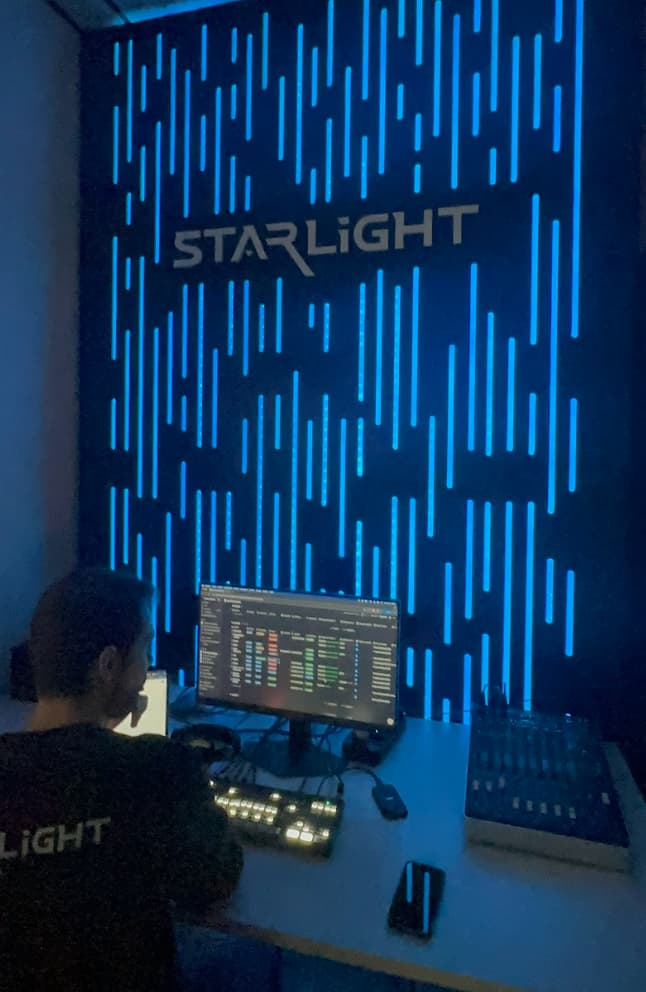
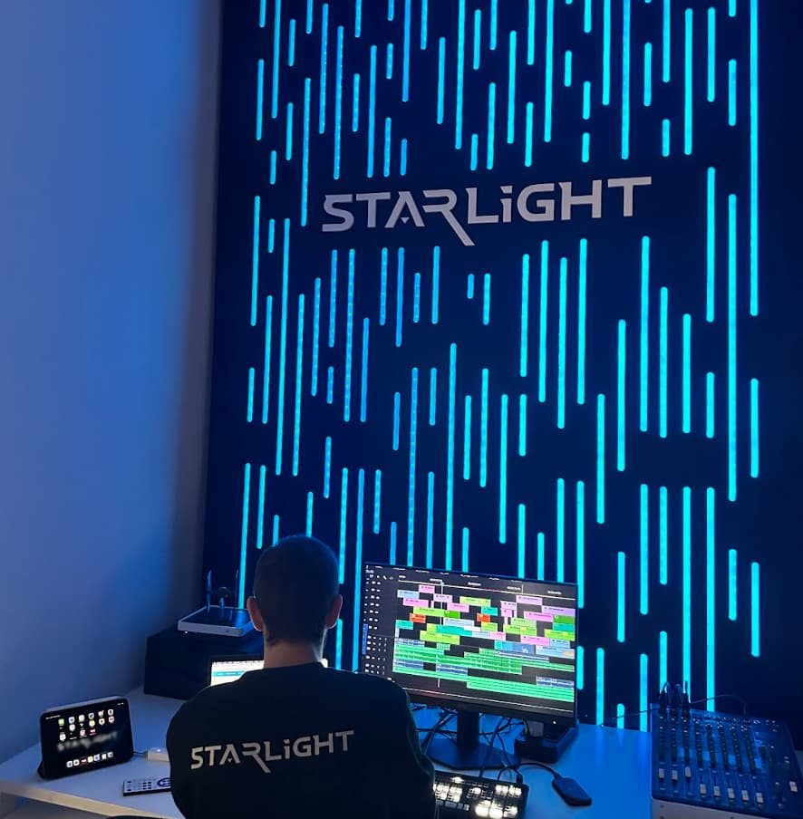
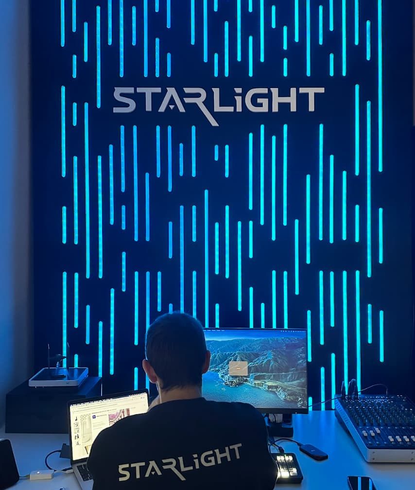

Diseñando una experiencia memorable para creadores y marcas.
Starlight Studios es una productora audiovisual ubicada en San Sebastián de los Reyes, Madrid, especializada en podcasts, contenido para marcas personales, anuncios publicitarios e infoproductores.
El reto no era únicamente mejorar la estética del espacio. Querían crear un punto focal que transmitiera una sensación de control, profesionalidad y autoridad desde el primer momento en que un cliente cruzara la puerta.
Un espacio que proyecte confianza desde el primer segundo.
Funcional para producción de alto nivel y visualmente impactante en cámara.
Elevar el valor percibido de la productora desde el momento de entrada.
Inspirándonos en la narrativa visual de Star Wars y en la estética de los centros de mando futuristas, diseñamos un entorno que proyecta precisión, tecnología y confianza.
El resultado es un espacio que no solo funciona como escenario de grabación, sino como una herramienta para generar una experiencia memorable para clientes, invitados y creadores. Porque cuando alguien entra a grabar contenido, la percepción importa.
Un espacio bien diseñado puede elevar instantáneamente el valor percibido de una marca.



45 minutos para analizar tu espacio y ver si encajamos.
Agenda tu llamada →